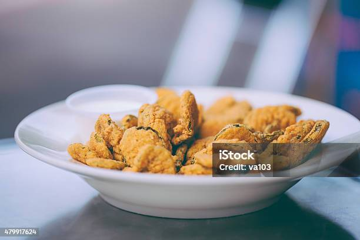

Fried Pickles

Description:
Fried pickles cooked to a perfect golden brown, crisp to the bite!
Ingredients
- Pickle chips, slices or spears.
- 1/2 to 1 cup of buttermilk.
- 1 to 2 large eggs, beaten.
- 1 cup all-purpose flour.
- 1/2 cup yellow cornmeal.
- Seasoning of your choice.
- Cooking oil. (Vegetabke, Canola, Peanut)
Cooking Instructions
- Prep the pickles
- Drain & Dry:
Drain your pickle slices or chips completely.
Place them in a single layer on a papertowel-lined baking sheet,
place more paper towels on top, press dowm to dry them thouroughly.
- Set Up Your Breading Station
- Dry Mix:
In a medium bowk, whisk together 1 cup all-purpose flour,
1/2 cup cornstarch or cornmeal (for extra crunch), and seasonings like
garlic powder, salt, black pepper, and a pincg of cayenne.
- Wet Mix:
In a second bowk, whisk together 1 cup buttermilk (or 1 ehh whisked
with 2 tbsp of pickle juice). A dash of hot sauce here can also add a slight kick.
- Coat the Pickles:
- Dredge:
Toss a few pickle slices/spears in the dry flour micture to coat evenly.
- Dip:
Shake off excess flour, then submerge the pickles in the wet mixture.
- Double Coat:
Dip them back into the dry flour mixture for a final, heavy coating.
- Fry:
- Heat Oil:
Add 2 inches of oil to a heavy-bottomed pot and heat to 350-375 degrees.
- Fry in Batches
Carefully drop in a small handful of pickles without over crowding the pot.
Fry for 1 to 3 minutes, flipping halfway, until golden brown.
- Drain and Serve
Remove with a slotted spoon or spider skimmer. Leth them drain on a wire rack
or paper towel-lined plate. Sprinkle with sea salt immediately and serve warm.
Back to Recipes